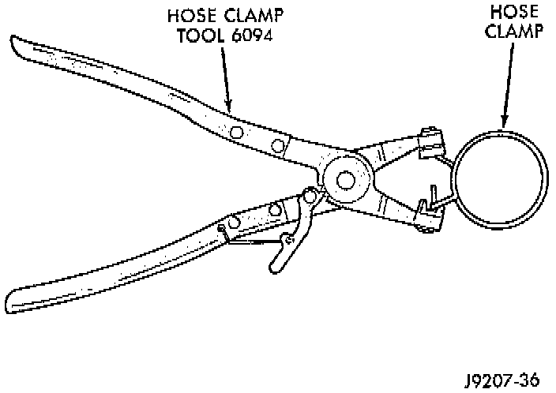
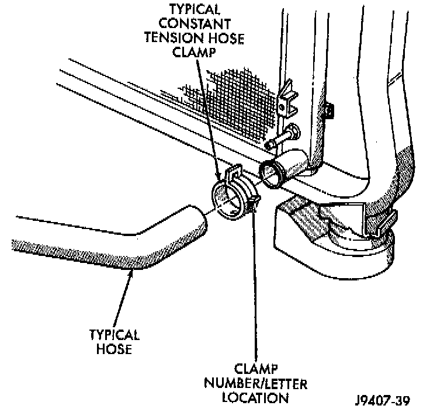

Radiator Hose: Description and Operation
DESCRIPTIONRubber hoses route coolant to and from the radiator, intake manifold and heater core. The lower radiator hose is spring-reinforced to prevent collapse from water pump suction at moderate and high engine speeds.

WARNING: CONSTANT TENSION HOSE CLAMPS ARE USED ON MOST COOLING SYSTEM HOSES. WHEN REMOVING OR INSTALLING, USE ONLY TOOLS DESIGNED FOR SERVICING THIS TYPE OF CLAMP, SUCH AS SPECIAL CLAMP TOOL (NUMBER 6094). SNAP-ON CLAMP TOOL (NUMBER HPC-20) MAY BE USED FOR LARGER CLAMPS. ALWAYS WEAR SAFETY GLASSES WHEN SERVICING CONSTANT TENSION CLAMPS.

CAUTION: A number or letter is stamped into the tongue of constant tension clamps. If replacement is necessary, use only an original equipment clamp with matching number or letter.
INSPECTION
Inspect the hoses at regular intervals. Replace hoses that are cracked, feel brittle when squeezed, or swell excessively when the system is pressurized. When performing a hose inspection, inspect the radiator lower hose for proper position and condition of the internal spring.
CAUTION: For all vehicles: In areas where specific routing clamps are not provided, be sure that hoses are positioned with sufficient clearance. Check clearance from exhaust manifolds and pipe, fan blades, drive belts and sway bars. Improperly positioned hoses can be damaged, resulting in coolant loss and engine overheating.
CLAMPS
Ordinary worm gear type hose clamps (when equipped) can be removed with a straight screwdriver or a hex socket. To prevent damage to hoses or clamps, the hose clamps should be tightened to 4 Nm (34 inch lbs.) torque. Do not over tighten hose clamps.